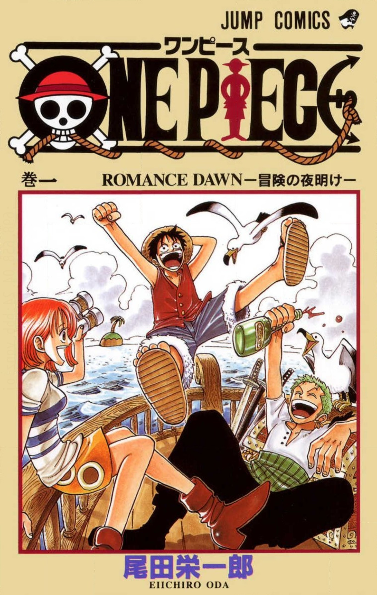
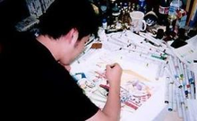
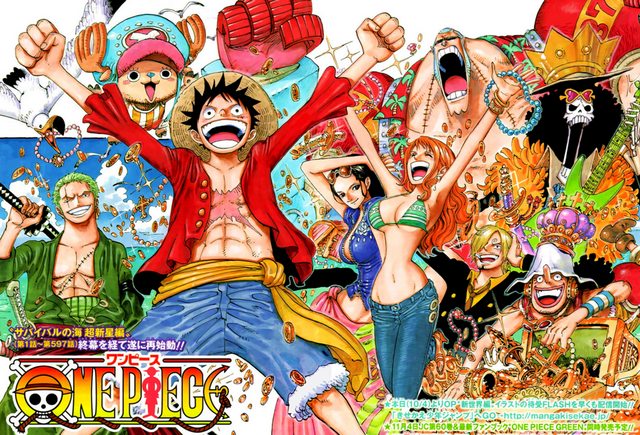
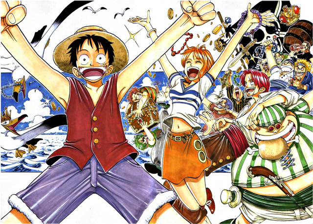
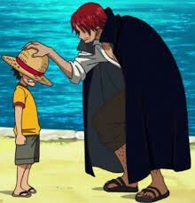
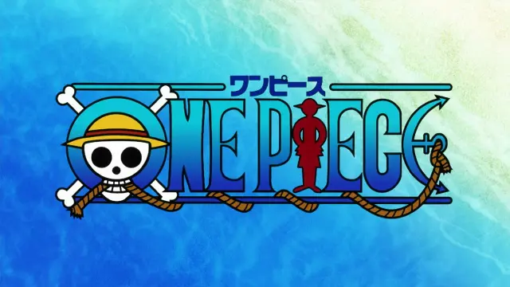
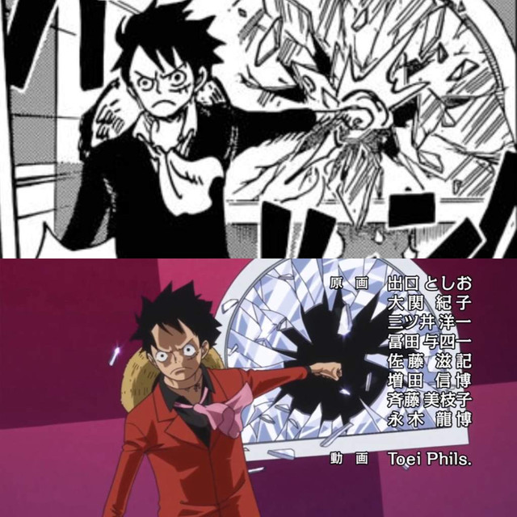

ONE PIECE
One Piece es un manga escrito e ilustrado por Eiichirō Oda y actualmente es el manga más comprado en el mundo. Comenzó a publicarse en la revista japonesa Weekly Shōnen Jump el 22 de julio de 1997 y a la fecha se han publicado 98 volúmenes, Larp Editores licenció el manga en Argentina y posteriormente fue retomado por Ivrea. En España principalmente la publicación estaba a manos de Planeta DeAgostini y después pasó a manos de Planeta Cómic el cual se encarga actualmente de su publicación. En México fue publicado por Editorial Toukan en un principio y, más tarde, por Panini Comics.
One Piece es el manga más vendido de la revista Shonen Jump (la más importante, reconocida y vendida del medio), de la editorial Shueisha, y de la historia, con más de 600 millones de copias vendidas a nivel mundial (por detrás de Superman con más de 600 millones de copias y de Mickey Mouse más de 1000 millones de copias), y en Japón fue el manga más vendido de manera consecutiva desde el año 2007 hasta 2018 logrando un récord histórico. En la encuesta realizada por la Agencia de Cultura Japonesa sobre los cincuenta mejores animes y mangas de Japón, One Piece alcanzó el puesto número 11. Guinness como el manga más vendido de la historia del mundo.
¿Por qué elegí este tema?
Elegí este tema porque personalmente conocí One Piece hace poco más de un año. Lo fui viendo ya que me lo recomendó un amigo y poco a poco me fue enganchando, a pesar de la gran cantidad de capítulos que tiene, disfruté casi todos. Es una gran historia con un argumento simple pero increíble cuando se desarrolla, y ahora que estoy al día puedo leer junto a amigos que recién están empezando a leerlo y me sigue divirtiendo. Básicamente lo elegí porque es mi manga favorito.
Argumento del manga
 La serie comienza con la ejecución de Gold Roger, un hombre conocido como el Rey de los Piratas. Justo antes de su muerte, Roger hace mención de su gran tesoro legendario, el One Piece y que puede ser tomado por quien lo encuentre. Esto marca el inicio de una era conocida como la Gran Era Pirata. Como resultado, un sin número de piratas zarparon hacia el Grand Line con el objetivo de encontrarlo. Más de veinte años después de la muerte de Roger, el One Piece sigue sin ser encontrado.
La serie comienza con la ejecución de Gold Roger, un hombre conocido como el Rey de los Piratas. Justo antes de su muerte, Roger hace mención de su gran tesoro legendario, el One Piece y que puede ser tomado por quien lo encuentre. Esto marca el inicio de una era conocida como la Gran Era Pirata. Como resultado, un sin número de piratas zarparon hacia el Grand Line con el objetivo de encontrarlo. Más de veinte años después de la muerte de Roger, el One Piece sigue sin ser encontrado.
Un joven llamado Monkey D. Luffy, inspirado por la admiración que desde su infancia le tiene al poderoso pirata Shanks el Pelirrojo, comienza su aventura desde su hogar en el mar East #008080 para encontrar el One Piece y autoproclamarse a él mismo como el nuevo Rey de los Piratas.
One Piece (1997-Actualmente)
En agosto de 1997, creó su obra característica, One Piece. Después de haber sido inspirado por los piratas, hizo One Piece una serie de piratas.
En 1998, Oda hizo los diseños para el primer OVA y estaba feliz de ver One Piece animado. En 1999, Toei Animation animó la serie y el personal a menudo se reúne con Oda para discutir sobre cómo manejar la serie animada.
En 2002, conoció a Chiaki Inaba, quien interpretó a Nami en la Jump Festa, y los dos comenzaron a salir, y en 2004 se casaron. En 2006, él y su esposa tuvieron una hija. En abril de 2006, Oda inesperadamente cayó enfermo y One Piece no se publicó durante esa semana. Sin embargo, se recuperó y reanudó One Piece en semana próxima. Debido a su reciente enfermedad, Oda sintió que era necesario ponerse al día con sus lectores y creo el Grand Line Times. Más tarde ese mismo año, se unió a Akira Toriyama para crear un crossover entre Dragon Ball y One Piece titulado Cross Epoch.
En 2007, en la Jump Fiesta 2008, en ausencia de Shuichi Ikeda (seiyu de Shanks), cuando los actores de voz actuaron para un omake protagonizado por Shanks, Oda llevaba una peluca rosa para el papel y explicó que sólo haría esto porque One Piece estaba en su décimo año.
En 2011 después del Terremoto y tsunami de Japón, Oda y otros mangakas dibujaron mensajes de apoyo a las víctimas.
Futuro
Oda ha declarado en una entrevista que después de terminar One Piece no haría ningún otro manga tan largo, ya que duda mucho que alcance la fama de One Piece, y solo hará historias cortas.
Evolución del arte
Al inicio de One Piece Oda estaba preocupado por su estilo artístico. En ese momento era más favorable tener personajes de ojos grandes, que el viejo estilo de ojos con forma de punto. One Piece es también conocida por sus numerosos diseños de personajes extraños y con proporciones extremas, que se hizo cada vez más común y exagerado a medida que la serie avanzaba. Un estilo que One Piece a lo largo de una década fue cambiando a como es hoy. En un principio utilizó muchas líneas gruesas, con un arte ondo e hinchable. Con el tiempo, las líneas fueron más delgadas y el sombreado de línea se utilizó ampliamente. Las características de los personajes se han vuelto más floja hasta el punto de que Zoro, por ejemplo, puede parecer bufonesco en un marco y un espadachín duro en el próximo. Luffy puede parecer más adulto en un momento, antes de volver a una apariencia más de niño (debido a que Dragon Ball ya había representado a uno, Oda pensó en «hombría» para su protagonista). En su introducción, Chopper no tenía su forma chibi de ahora, aunque él siempre se consideró lindo.
 Los fondos y diseños eran bastante sosos en comparación con otros más recientes. Estos eran funcionales y bien elaborados, pero no eran tan definidos como ahora. El cambio de estilo es en realidad extremadamente apropiada. El arte parece ser más detallado, emocionalmente e intensa mientras la trama avanza volviéndose más madura. Como es estas imágenes en las cuales se ve la diferencia del arte durante los años, a la izquierda un dibujo hecho para el primer capítulo y a la derecha uno hecho para el capítulo 698.
Formato del argumento
Dado que el manga se centra en el avance de los Piratas de Sombrero de Paja en su viaje a través del Grand Line, no deja de tener un «formato». Como se vio en sus one-shots, a Oda le gusta poner a sus personajes en situaciones extremas que deben superar. Mientras que muchas de las situaciones son bastante graves, también disfruta incluyendo una cantidad significativa de humor en la serie. Oda es conocido por usar en variadas ocasiones el efecto de sonido トン (Don) y por dar a sus personajes una risa distintiva diferente a una normal. Oda también incluye diversos animales en sus dibujos, y es responsable de las numerosas apariciones de animales dentro de la historia. También ha informado que disfruta de los giros repentinos en la historia. A menudo añade elementos a la trama, y estos vuelven a incluirse mucho más adelante a menudo con una historia importante no revelada antes, como el caso de la introducción del abuelo de Luffy, Monkey D. Garp, que fue presentado simplemente como «Garp» en una portada del manga, o el Haki, que se introdujo con Shanks con solo «causar miedo» al Señor de la Costa, mucho antes de que este explicara qué fue lo que exactamente hizo. También el one-shot Monsters no tenía indicios de poder pertenecer a la trama argumental de la serie, hasta que se confirmó.
Críticas y reconocimientos propios
A pesar de ser mi manga favorito tiene varios aspectos malos que le restan bastante calidad, por ejemplo, al ser un manga tan largo no llega a muchas personas y su adaptación al anime deja mucho que desear; otro punto malo que tiene es que el creador (Oda), quien admitió que no le gusta mucho matar personajes, y aunque sí mueren algunos personajes en la serie, a veces hay situaciones en la que una ciudad entera se destruye y nadie muere, me gustaría que fuera más cruda en ese aspecto. En cuanto a cómo se relacionan los personajes principales me parece muy bueno, pero falta un poquito de desarrollo entre ellos para justificar la confianza que se tienen. Uno de los mejores aspectos de One Piece son sus islas, ya que al tener un mundo propio y que este mismo sea en su mayoría mar, compensa el que cada isla esté tan bien pensada, tanto en su sistema económico y cómo cada isla es completamente única utilizando cada una tecnología diferente dependiendo de la zona en la que estén ubicadas. Además, amo como el autor toca temas fuertes a veces como el racismo, clasismo, o la misma esclavitud; hasta muestra gente transgénero o travesti de forma natural sin hacerlos destacar innecesariamente ni denigrándolos, incluso, hasta haciendo comedia con ellos en repetidas ocasiones. Me encanta su historia tanto como su argumento, y no creo que tenga nada malo ya que, a pesar de ser simple, al desarrollarse durante los capítulos abre un mundo inmenso lleno de secretos por descubrir, su historia es tan buena que te mantiene al borde de la silla hasta que salga un nuevo capítulo la semana próxima.
Por último, en cuanto a su diseño de personajes, me parece que Oda hizo un buen trabajo. En sus inicios fue muy criticado el diseño, pero actualmente es un referente del manga. One Piece tiene un un diseño único que puede ser usado de muchas formas, puede ser serio si es necesario o más relajado y simple en escenas cómicas, da mucho juego para las situaciones al no ser personajes complicados. Lo único malo que veo de este aspecto es la «igualdad de cuerpo» entre las mujeres, pero, de todas formas, todos los diseños son muy buenos. En el diseño de los escenarios y fondos se destaca cada isla nueva o ciudad, estas se sienten vivas y transmiten un aire de aventura que te hacen querer saber más sobre ese lugar.
Críticas de otros medios (páginas web)
-Muchos pensábamos que One Piece iba a empeorar. Su desarrollo era demasiado bueno. En algún momento tenía que quebrarse la línea de calidad. Pero nos equivocábamos. A pesar de la gran cantidad de capítulos, y correspondientes tomos (aunque no es exacto, equivaldría a tankōbon en japonés) publicados, todavía sigue manteniendo altos niveles de calidad. Aunque el dibujo es relativamente bueno, su fuerte es el guion. El manga ha desarrollado su argumento hasta lograr una cierta complejidad. En determinados momentos, da la sensación de que leemos un seinen (manga dirigido a un sector joven-adulto, masculino), sin embargo, la perfecta (y obvia) estructura en sagas, y algún detalle del guion, nos devuelven fácilmente a la esencia del shōnen, pero sin cansarnos. No resulta repetitivo. La urdimbre se desarrolla con fluidez y, de forma coherente, introduce subtramas y nuevos personajes que enriquecen la lectura. El crecimiento de las mismas ha sido exponencial a lo largo de la serie, de esta forma los nuevos personajes no se acumulan sin sentido, y permite al espectador acostumbrarse a los distintos cambios. Está claro, daba la sensación de que el manga, por su extensión en el tiempo, acabaría resultando repetitivo o derivaría en tópicos (algo muy común en este género, Fairy Tail o Kenichi son buenos ejemplos de ello). Sin embargo, nos equivocábamos. Es una buena lectura. Recomendable, a pesar de, y también precisamente por eso, la gran cantidad de capítulos ya publicados.
Criticas de amigos
-A la hora de hablar de One Piece estamos hablando de muchas cosas, al ser una serie de tantos capítulos da mucho de qué hablar en cuanto a su historia, pero saliendo de su historia, a pesar de tener más de mil capítulos y subiendo, se sigue manteniendo como top uno de los mangas más vendidos del mundo y está a nada de superar a Harry Poter, la colección de libros más vendidos del mundo. ¿Pero por qué?, ¿por qué luego de 20 años esta historia sobre piratas sigue siendo una de las más vendidas de la historia? Para que una historia tenga éxito, debe distinguirse lo más posible del resto, una de sus caracterizaras más únicas e imposible de imitar es su estilo al momento de dibujar, que destaca mucho al momento de comparar One Piece con otros mangas. Sin embargo, este estilo único que tiene el creador en su obra no puede gustarles a todos, y no voy a mentir, para mí fue uno de los impedimentos más grandes para ver la serie. Cada persona es un mundo, hay gente que le puede gustar desde el principio, y gente como yo, que sin con siquiera ver la serie ya no me gustaba. De todas formas, le di una oportunidad y pasé de odiarlo a amarlo en pocos capítulos, su estilo permite ver bien a sus personajes en cada situación sea cómica, triste, seria, etc.. Aun así, teniendo un estilo diferente no alcanza. Para mí una de las cosas en las que más destaca esta serie es su historia y su mundo, que están constantemente en movimiento, los protagonistas pueden estar en una isla conociendo toda su cultura, gente, eventos, etc. (porque cada isla tiene su propia cultura también) y en otro lado del mundo puede estar sucediendo algo que literalmente, cambie el destino del mundo y los personajes se deben adaptar a este suceso.
Si bien, vemos la historia de Luffy y los Sombreros de Paja, el mundo de One Piece también tiene una historia y los personajes se deben saber mover por ella... e incluso descubrirla, ¿qué es el siglo vacío?, ¿qué es la voluntad D.?, ¿Cuál es el origen de las frutas del diablo?, y el objetivo de la serie ¿Qué es el One Piece? Quizás piense, “¿Por qué me interesa saber todo eso a mí, si sólo hay que saber qué es el One Piece?", y yo le digo, esto le interesa, porque está ligado con el objetivo de la serie. Estos son solo unos pocos misterios sobre la historia, pero son estos misterios, esta historia, este mundo vivo los que mantienen a One Piece como el manga más vendido año tras año. Con todo esto, la historia despierta un sentimiento de aventura el cual es difícil de despegarse y es normal sentirse dentro del barco con ganas de seguir viendo más aventuras. Podría seguir desarrollando aún más por qué One Piece tiene la mejor historia jamás creada en cuanto a manga hablemos, pero sino no termino más, estilos, historia, mundo, personajes, personalidades, islas, culturas, aventuras, momentos, mensajes, política, reinos, homofobia, racismo, esclavitud, discriminación, etc..
-Realizo esta crítica luego de varios años para encontrarme con esta sobrevalorada obra japonesa. La idea de un viaje con amigos incondicionales y, sin motivo aparente, leales a un capitán sin actitud de uno mismo, me parece muy cliché. Los conflictos que se les presentan a estos "protagonistas" se ven terriblemente forzados y animados por esa repetitiva tendencia a las peleas físicas que los Shounen presentan una y otra vez (aumentos exagerados de un "poder" sin fundamentos realistas, cargar con un falso, y forzado, sentimentalismo a los personajes que participan de estas peleas sólo logrando que se vean frías, aburridas, etc.). Siempre me pareció muy irrealista y absurdamente afortunada la forma en que los protagonistas escapan de cualquier peligro. El desagradable diseño de los personajes. Y ni hablar de su inviable adaptación animada. Lo único que puedo salvar de este manga es su forma de convertir momentos absurdos en algo con una carga emocional importarte. En fin... una “obra” hecha para niños
¿Qué es mejor?, ¿el manga o anime?
En términos simples y desde una visión objetiva, el manga es mucho mejor que el anime, ya que todo va al grano y es mucho más rápido de leer. En el manga no existe ese relleno innecesario que tienen los episodios. Hubo una época en la que un capítulo de manga el anime lo cubría en 4 capítulos, algo totalmente sin sentido. Aunque un punto a favor para el anime es que las escenas más épicas, emocionantes, o importantes se muestran de una forma maravillosa en la animación. Resumiendo, para mí el manga de One Piece es mejor que el anime.
Además del relleno agregado en el anime, alargan escenas y agregan reacciones no-canónicas arruinando el ritmo de los episodios.
Capítulos rellenos del anime: 60-61,64-61,94,98-99,101-102,141-144,196-206,214-216,220-226,279-284,291-292,404,417-419,426-46,482-484,406-407,426-429,467-468,492,497-499,606,642,676-678,690,626-628747-761,776,780-782,807.
volver al inicio